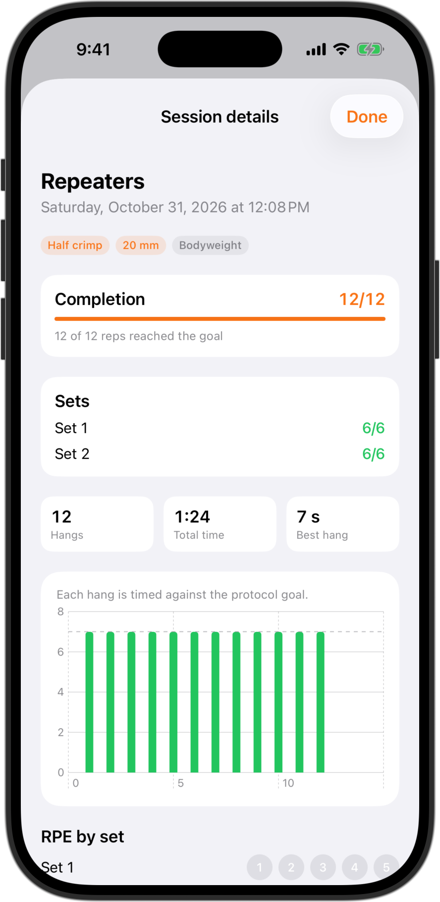
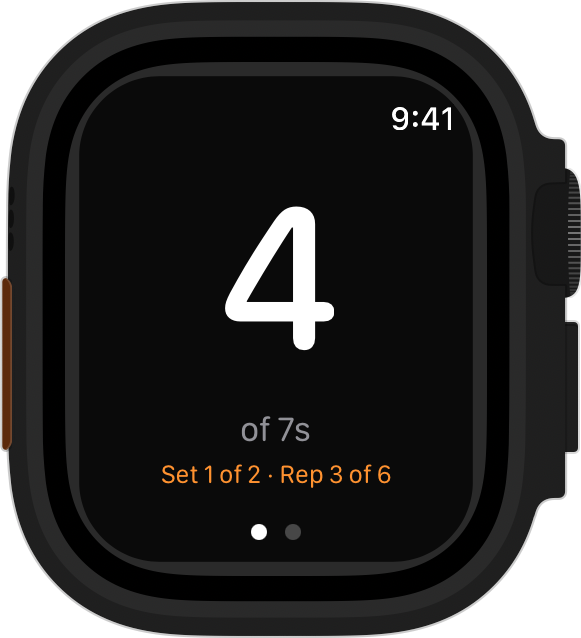
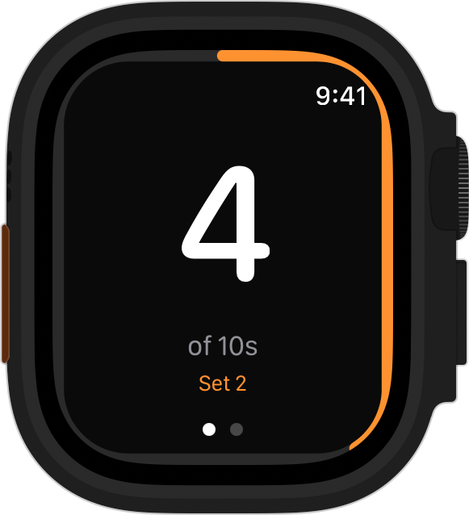
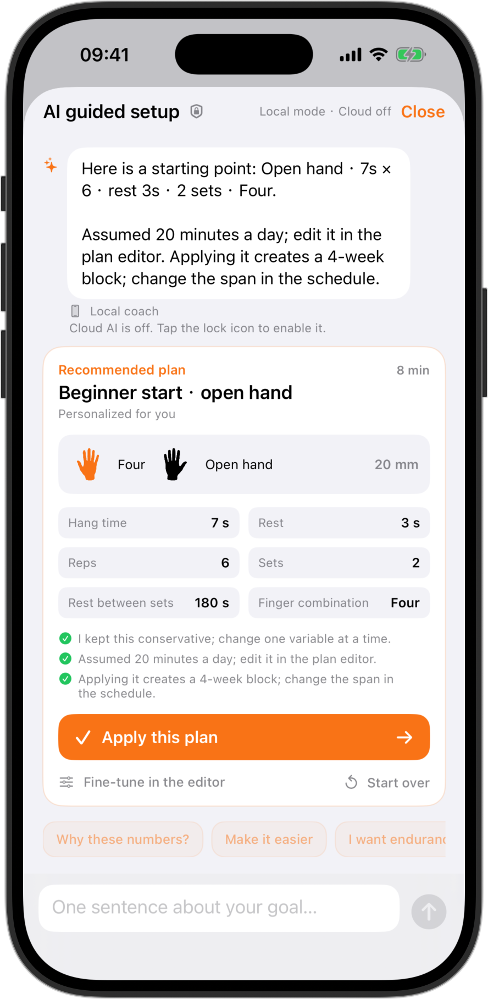
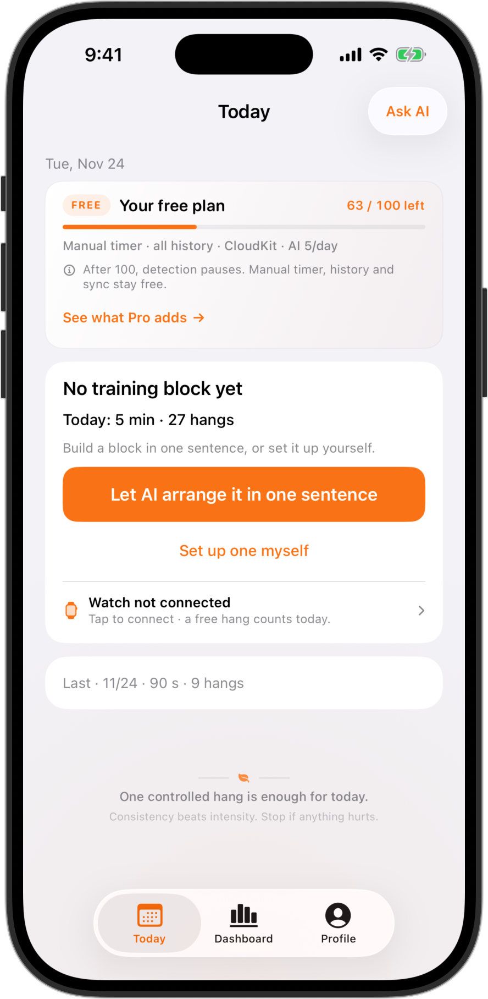
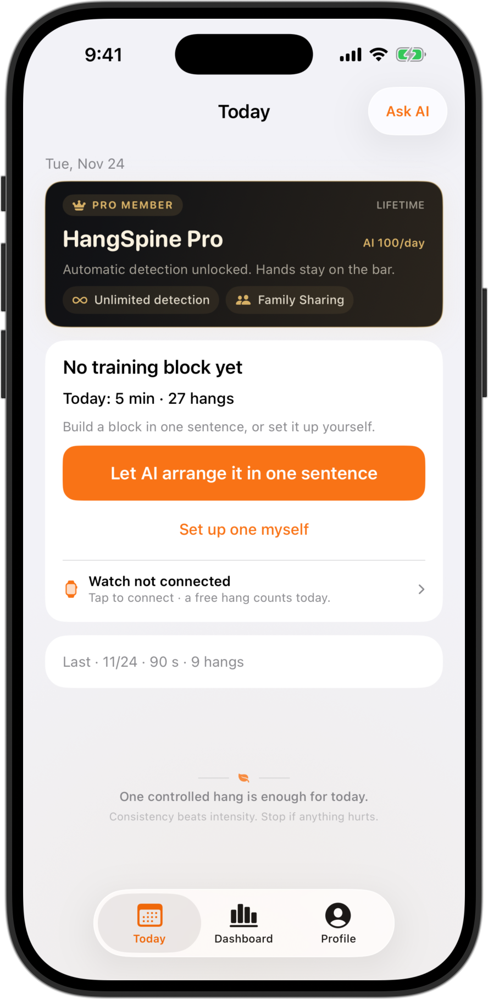

HangSpine · Apple Watch + iPhone
What's new in 1.0.5
HangSpine 1.0.5 is the largest update since launch. It brings hangboard training to the watch, a plan and a weekly training block to the phone, an AI coach you brief in one sentence, and a more honest way of counting. Here is what changed, screen by screen.
Free and Pro. HangSpine is free to download and includes your first 100 auto-detected sessions. HangSpine Pro removes that limit and raises the AI coach allowance from 5 to 50 (monthly) or 100 (one-time) questions a day — a monthly subscription or a one-time purchase. Manual timing, your history, stats and iCloud sync are always free. Bought HangSpine before? You're a founding member: lifetime Pro, nothing to do.
In the US, Pro is US$3.99 a month or US$19.99 once; other regions see the App Store.
One hang is one rep
“If, for example, you're already happy doing a 60-second hang three times a day, you won't want to use an app that will only let you record this as 12 15-second hangs.” — a Reddit user, October 2026
That was a counting-model problem, not a sensor problem: the old version split a hang whenever it crossed the target. 1.0.5 records one continuous hang as one rep, at its real duration. When you hang freely, a regrip within 4 seconds stays the same hang, and crossing the target triggers one celebration instead of cutting the hang in two. The per-hang goal can be set from 5 to 180 seconds. 60 seconds is 60 seconds.


Hangboard training on the watch
The watch now runs hangboard protocols, not only free hangs: repeaters, max hangs and custom sections, with rest cues. While you train, the screen tells you which set and which rep you are on, and it counts down every rest. Every session logs its grip, edge (mm) and added weight (kg or lb). On the free plan, once the 100 auto-detected sessions are used up, the watch still offers a manual mode: you end each hang yourself, and the session lands in the same history.




A clearer Ready screen
The Ready screen shows the one thing you may want to change — the target per hang — and a single Start button. Turn the crown to change the target; the next page lists your plans. Tap Start, and after the countdown the watch does what it always did: it starts when you grab and stops when you let go. The screen stays awake while you hang, and it works without your phone.


Profile, training block and AI coach on the phone
The phone app has three tabs: Today (where it opens), Dashboard and Profile. A climber profile holds your discipline, grades (Ewbank, YDS, V-scale or Font), board and training focus, plus your height and weight if you choose to enter them. The Dashboard lays out a weekly training block: which week you are in, which grip comes next, and what is already done.
The AI coach takes one sentence. Describe your week and it returns a plan with editable numbers; apply it as it is, or tune it in the editor. It starts in local mode: answers come from on-device rules and nothing is sent. Cloud AI is optional, every answer is labelled Local coach or Cloud AI, and each day has an allowance — 5 questions on the free plan, 50 with Pro monthly, 100 with Pro one-time. The on-device coach never uses one.


Sending a plan to the watch, honestly
The primary button on Today is Send plan to watch. It saves the plan, sends it, and tells you the real delivery state. It does not start a workout on your wrist. If no watch is paired, it says so; if the watch is paired but the app is not installed or not reachable, it says that too. Starting still happens on the wrist: raise, grab, release.


Stats to come back to
Today shows the day and the week at a glance; the Dashboard keeps the trends and a 26-week heatmap. In the hangboard review, every session shows its grip, edge, weight and a bar for each hang, and afterwards you can add a note and an RPE (1–5) per set. Sessions export as CSV (Settings → Data → Export sessions (CSV)), and a local reminder can nudge you at 6:00 PM on training days (Settings → Reminders). Training records sync through your own iCloud, so a reinstall or a new phone gets them back.
Privacy, in one paragraph
Training records stay on your iPhone and Apple Watch and, if you are signed in to iCloud, in your own private iCloud database. There is no account. The AI coach starts in local mode and sends nothing. Only if you turn cloud AI on and ask for a plan do your sentence, your training profile, your current plan and block, and a summary of recent sessions go to the plan service. Web addresses, email addresses and mainland Chinese mobile numbers are removed on your device before anything is sent. A redacted copy of the current message is kept for up to 90 days to improve the coach. The details are in the privacy policy.
This app is a training timer/logger, not a medical device. Nothing here is medical advice. Always follow your doctor's recommendations.
Get HangSpine
HangSpine is on the App Store for iPhone and Apple Watch. Questions? The support page covers setup, the free plan and Pro; the overview shows the whole app.
Get HangSpineApp Store · Free to download · Pro optional